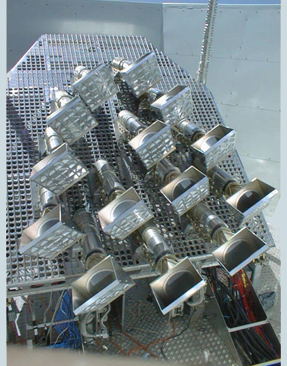

The main focus of my research is physical cosmology, a worldwide effort to explain the inner workings of our universe on its largest scales in terms of physics that we know, understand, and love. In particular, cosmological observations now show that in addition to the matter present in the standard model of particle physics, the universe is filled with two extra components: dark matter and dark energy. Dark matter is a component that is coupled to known matter and fields gravitationally, but does not interact significantly through any other force. Luckily, theorists are able produce many ideas of what this elusive dark matter particle could be, and some will be tested soon at the Large Hadron Collider in Cern. Dark Energy is an even more mysterious component. It is a smooth, invisible component that drives the recent acceleration of the universe. Its energy scale is different to understand within the context of the standard model of particle physics. Nevertheless, we have now seen it in many different cosmological probes. Some theoretical physicists think that the existence of dark energy in terms of vacuum energy is most natural and should be expected, while others think it is the strangest thing they have ever encountered. My job as a cosmologist (in working at the interface between theory and experiment) is to work around various astrophysical and observational limitations to extract the maximum amount of information from the available observational data. Following is a short description of research that I am currently pursuing. Most of my research is done with collaborators, too numerous to cite.
Lyman Alpha Forest
HIRES Spectrum of HS 0105+1619. The messy stuff left to the Lyman-Alpha peak at around 4450 Angstroms is the forest.
Light from distant quasars is absorbed by the neutral hydrogen atoms along the line of sight. This produces a characteristic structure in the spectra of quasars that we call Lyman Alpha Forest. By studying the statistical properties of these spectra we can infer the statistics of the underlying matter distribution. This can in turn be used to constrain various parameters of the cosmological model, most importantly properties of neutrinos (very important subatomic particles), the details about how the inflation took place and early dark energy. In particular, I am focused on measuring the 3-point statistics also known as bi-spectrum.
Supernova data

A supernova bursting off at the outskirts of NGC 4526 (High-Z Supernova Search Team/HST/NASA)
Supernovae act as standard candles, which allow us to use them to measure the expansion history of the universe. I have not only used supernovae to constrain cosmology in some of my parameter estimation ventures, but have also done research on the effect of their peculiar velocities. Coherent motions in the universe produce coherent perturbations on the supernovae luminosities, allowing one to probe perturbations in the universe while at the same time reducing our ability to probe the background expansion of the universe. With collaborators from Oxford, we were first to measure this effect.
Large Scale Structure data

NGC 5248, a spiral galaxy much like the Milky Way. Image courtesy the Sloan Digital Sky Survey.
Large Scale Structure data is an umbrella term covering measurements of clustering properties of objects in the universe. These include data from "nearby" galaxies from the redshift surveys, such as SDSS and 2dF, as well as measurements of correlation properties of luminous red galaxies (LRG) and quasi-stellar objects (QSO or quasars). I have recently been involved in a project to determine the amount of local non-Gaussianity using the scale dependent bias of these probes.
Cosmic Microwave Background
The Cosmic Microwave Background (CMB) is the relic radiation emitted about 400,000 years after the Big Bang and contains a plethora of information about our universe, its contents, and geometry. It is the most important and clean cosmological probe available to us. I was involved in measurements of the CMB fluctuations as a graduate student working with the Very Small Array (VSA). I have published more papers on various aspects of the CMB and WMAP, including work on the famous axis of evil (claimed correlation between hydrogen and CMB spots) and our ability to measure difference in neutrino masses from the CMB.
Neutrinos and other thermal relics

Shown at left: A plot showing suppression in the power spectrum of matter fluctuations for three equally massive neutrinos (dotted) and one massive and 2 light neutrinos (dashed). Solid line shows a massless neutrino case. The early history of the universe is a beautiful probe of basic physics, because it very simple: it is hot and homogeneous and therefore its state is completely described by one parameter: temperature. By calculating how the universe cools and how various particles condense in this process, we are able to put very strong limits on various fundamental particles, such as neutrinos, thermalized warm dark matter particles, axions, and similar species.
Galaxy Zoo
Galaxy Zoo is a project to harness the power of the internet to morphologically classify nearly a million galaxies from the SDSS catalogue. I was a member of the core team since the inception of the project. Response from the public has been astonishing - over 100 thousands individuals registered to participate and we have an average of over 30 classifications per galaxy. Scientific results are quite exciting as well and we are publishing results very soon.